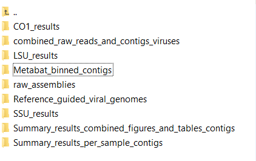
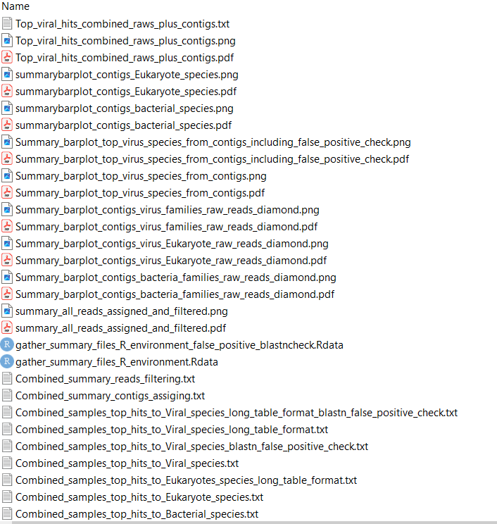
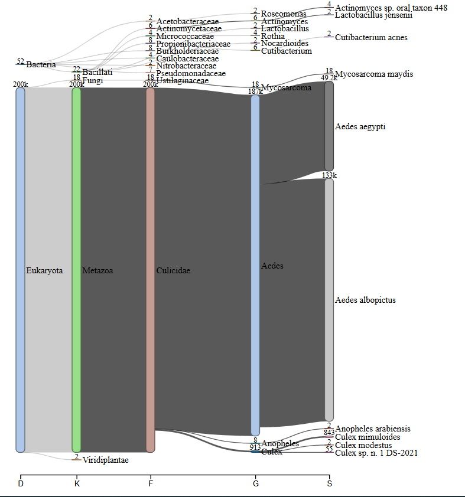
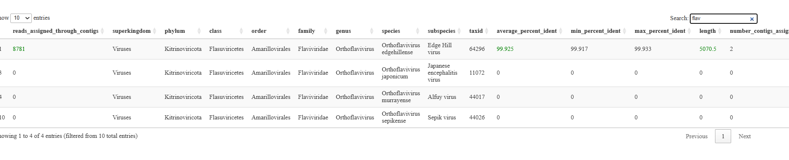

Interpreting results¶
Results folders¶
MetaDIVE will generate slightly different results based on the modules chosen but the main results of all runs will be contained in a results folder titled Summarised_results
This folder will contain several subfolders depending on the modules used. Here we will break down the results of each folder and ways to interpret them
{kind=link}
This main summary results folder is located in the pipeline directory after analysis is complete.
/MetaDIVE/pipeline/Summarised_results
Summary_results_combined_figures_and_tables_contigs¶
The following folder contains a breakdown of all summary graphs and tables from MetaDIVE.
{kind=link}
All figures in MetaDIVE are saved as both png and pdf files for easy reading.
The key files to be aware of are
Summarybarplot_contigs(bacterial,Eukaryote) and Combined_samples_top_hits_to(bacterial,Eukaryote)¶
These files and figures contain the top 10 identified bacterial and Eukaryote species (excluding host if host identification module was used). These are similar but with fewer columns than the above example of Top_viral_hits_combined_raws_plus_contigs. Caution should be used when reading these tables as bacterial and Eukaryote assignments are prone to false positive assignments through blastx.
Summarybarplot_(bacterial,Eukaryote,virus)_families¶
These files and figures are the like the above summarybarplot contigs results except with just single read results from Diamond BLASTx. This is done before Single Read analysis and so no quality checks are completed yet. These files are only useful if you do not want to run the full Single Read analysis module but want a rough idea of what the rest of the reads are composed of.
Combined_summary_reads_filtering.txt¶
Summary of all the reads assignments as part of the core module e.g, how many reads passed QC. were assigned as CO1, to host, to SSU, to bacteria, Viruses etc.
paired text file to summary_all_reads_assigned_and_filtered.(png/pdf) which shows this information in figure format
Similar also to Combined_summary_contigs_assiging.txt which has the same information but focussed on contigs, contig sizes, contig numbers, numbers assigned through BLASTx, BLASTn or unassigned.
gather_summary_files_R_environment and gather_summary_files_R_environment_false_positive_blastncheck.Rdata¶
These are the R environments which contain all data used to create these summary results tables and figures.
If you need to adjust the tables/figures you can easily load these documents into R and recreate the specific images you are after.
Summary_results_per_sample_contigs¶
This folder contains sample specific results for the core module. A lot of this data is unnecessary to view as it has all been summarised in the folder Summary_results_combined_figures_and_tables_contigs but it also includes non summarised data including
[Sample]_summarycontighits_assigned_assembly.txt which contains all individual contig assignments and statistics around the BLAST assignments
as well as larger summary files like [Sample]_top100Viralhits_contigs.txt which contains the top 100 assignments instead of the top 10 reported in some of the combined summary top assignment tables
This folder also has a breakdown of the top returned SSU/LSU/CO1 reads hits per sample [Sample]_top10returnedspecies_(SSU/LSU/CO1)
raw_assemblies¶
This folder contains the generated assemblies for each sample. This can be useful if you want to do a deep dive, or you can take these contigs and put them into other Analysis pipelines such as nf_core to allow for accurate bacterial identification and genome assembly without having to refilter and de-novo assemble raw data
CO1/LSU/SSU_results folders¶
When microbiome or host depletion modules are turned on three folders summarising the three marker genes are created.
within each of these folders are three folders
blastn_contigs which contains the BLASTn results of assembled contigs of these markers.
assembled_contigs which contains the assembled contigs of each marker gene.
read_homologies which contains the results html figures of a Last common ancestor analysis used to identify what species are present.
{kind=link}
combined_raw_reads_and_contigs_viruses¶
This folder contains two key results types split by sample name.
[Sample]virusall_sums.(csv/html)¶
These files are very similar to the Top_viral_hits_combined_raws_plus_contigs having the same columns and data however it is sample specific results instead of combined.
This data is also in an html format for easier manual interrogation of important samples. Here the user can type any variables into the search bar to look for patterns or key viral groups of interest.
{kind=link}
If the diverged reads/contigs module is run, a more complete csv file titled
[Sample]_virusall_sums_incl_diverged_reads.csv whill be available. This file contains an additional column of data for additional diverged reads detected.
Individual viruses detected¶
For every virus identified in [Sample]_virusall_sums a folder is created for that specific virus. in this folder will be all contigs and all reads assigned to that viral species in fasta and fastq format for quick manual inspection in programs like geneious.
Metabat_binned_contigs¶
To be completed